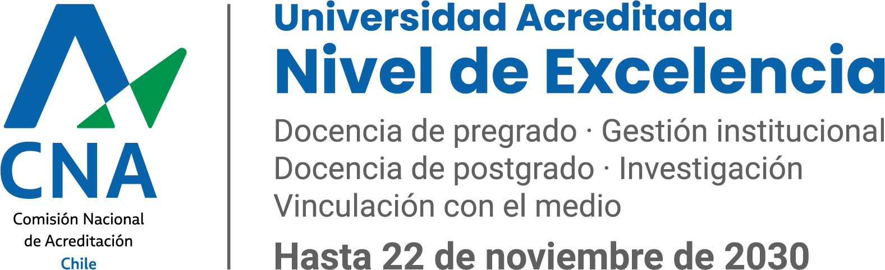

Selecciona tu carrera de la Universidad de Concepción. Te diremos qué equipo buscar según el software real que cursarás, por qué cada especificación importa.
En lugar de fijarte en marcas o modelos comerciales específicos (cuyo catálogo y stock cambian continuamente en el mercado chileno), aquí tienes la guía institucional de qué tipo de componentes técnicos y tecnologías clave buscar en tu Notebook, Tablet, Calculadora y Periféricos según las exigencias reales de tu carrera UdeC.